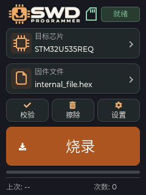
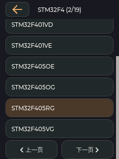
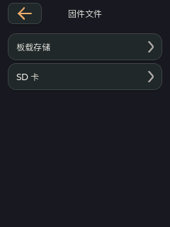

离线烧录
在设备上按系列和型号选择目标芯片，通过 SWD 擦除并写入目标芯片的片内 Flash。
STM32 触屏离线烧录器
将 HEX 固件存入设备，连接目标板，在触屏上选好芯片型号和文件即可烧录。适用于小批量生产、维修和现场固件更新，烧录时无需连接电脑。

在设备上按系列和型号选择目标芯片，通过 SWD 擦除并写入目标芯片的片内 Flash。
从板载存储或 SD 卡浏览并选取固件。连接电脑后可通过 USB 磁盘复制文件。
可开启烧录后校验，也可单独执行校验，将目标 Flash 中的数据与所选固件比对。
屏幕显示擦除、写入、校验等阶段，以及最近一次操作结果和累计烧录成功次数。


当前固件为 1,630 个 STM32 型号接入了片内 Flash 算法，涵盖 F0、F1、F4、G0、G4、H7、U5 等系列。具体型号以设备上的可选列表为准。STM32F103RCT6 已完成实板烧录和读回校验，接入算法的型号中仍有待实板验证的型号。
| H1 引脚 | 连接 |
|---|---|
| 1 | 目标板电压参考（VREF，采样输入） |
| 2 | SWDIO · 数据 |
| 3 | SWCLK · 时钟 |
| 4 | GND · 共地 |
| 5 | NRST · 目标复位 |
烧录会擦除固件地址涉及的整个 Flash 扇区。更新应用固件前，请确认这些扇区里的引导程序或参数已备份。